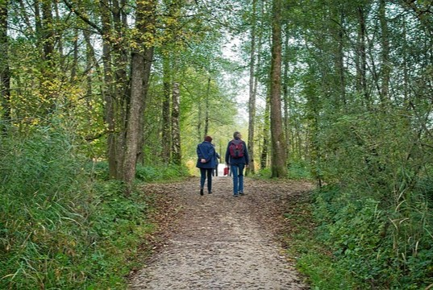

Our Community

The people of Creston or Crestonites as we call them, are known for being welcoming, down to earth, community minded individuals. It’s a town where neighbours wave hello, strangers spark up conversations and everyone seems to know each other by name no matter where you go.
Many residents including myself enjoy being out in nature whether its hiking, gardening, or spending weekends at the local markets. The community includes families who’ve lived there for generations as well as newcomers drawn in by Creston's friendly atmosphere.
